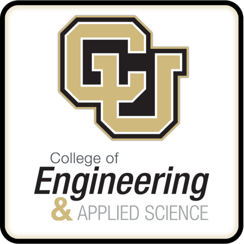

Michael D. Aaron
Boulder, CO
USA
michael.drew.aaron@gmail.com
USA
michael.drew.aaron@gmail.com
Work Experiences
| Org | Position | Duration | Description |
|---|---|---|---|
 | Technologist Intern | Summer 2014 | -Wrote an IETF RFC draft on technical censorship mechanisms -Created Policy for Technologists educational material -Translated technical jargon on topics ranging from Bitcoins to Homomorphic Encryption for internal and external consumption |
| Quality Assurance Intern | Summer 2013 | -Created REST testing suite for Thrift -Created API testing environment with Cucumber -Worked on custom PubNum console for developers | |
 | Product Marketing Intern | Summer 2012 | -Became well versed in the current Enterprise Agile sector -Learned basic Product Marketing research and analysis -Created a Drupal site for the Product Marketing team on the company intranet |
Education
| College | Degree | GPA | Duration |
|---|---|---|---|
| University of Colorado Boulder | B.S of Computer Science | Fall 2011 - August 2015 |
Portfolio
| Image | Project Title | Link | Year |
|---|---|---|---|
 | A Survey of Worldwide Censorship Techniques | https://tools.ietf.org/html/draft-hall-censorship-tech-00 | 2014 |
| Matching Without Sharing: Benefits and Challenges of a PSI Technique | https://cdt.org/blog/matching-without-sharing-benefits-and-challenges-of-psi-technique/ | 2014 |
Skills
| Skill | Expertise | Experience |
|---|---|---|
| Python | Expert level | 4 years years |
| Node JS | Proficient level | 2 Years years |
| HTML/CSS | Proficient level | 2 Years years |
| Ruby | Proficient level | 2 Years years |
| Scala | Proficient level | 1 Year years |
| C++ | Proficient level | 4 years years |
| Machine Learning | Proficient level | 1 Year years |
Honors
Capital One: Summit for Software Engineers

Hackathon hosted by Capital One for distinguished students
Enginereing Differential Scholarship

The engineering department had some extra money, they decided to give some to me.
Hatfield Scholar for Public Policy

technical policy internship in Washington DC.
References
| Reference Name | Reference Contact Info |
|---|---|
| Joe Hall - CDT | contact me |
| Areeya Taylor - Nest Labs | contact me |
| Mike Skirpan - CU PHD canidate | contact me |